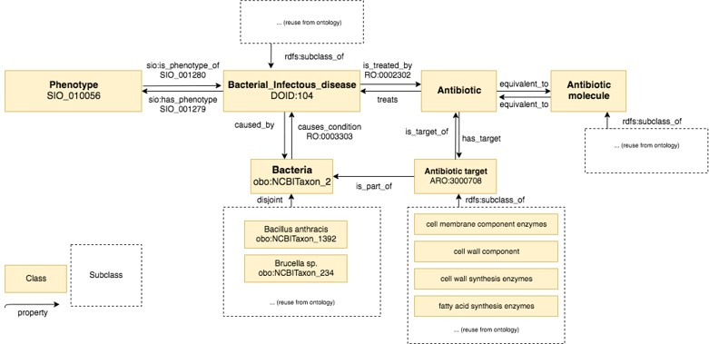

<h2 id="desc" class="list">BHID: Description <span class="backlink"> back to <a href="#toc">ToC</a></span></h2>
<span class="markdown">
El modelo conceptual que se construye y después se implementa en OWL/RDF es el siguiente:
</span>

